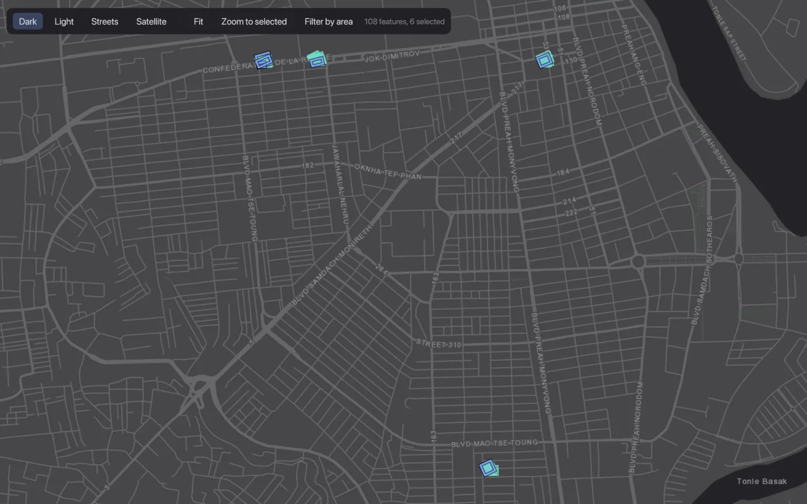

A small Postgres client,
with a map.
rgrip is a native PostgreSQL client for macOS. Query, browse and edit your tables, and see PostGIS data on a map next to the rows it came from.
Version 0.0.12 alpha · macOS 11+ · Apple silicon · ~10 MB · Free and open source
Your rows and your map, linked
Open a table with a geometry column and put the map next to it. Select rows and their features light up. Click a feature and its row is selected.
- Split viewGrid and map side by side, resizable.
- Zoom to selectedFit the map to the rows you picked.
- Filter by areaDraw a box on the map to filter the table.
- Reprojects for youWGS 84, Web Mercator and UTM, on four basemaps.

Files go straight into tables
Right-click a schema, pick a file, check the preview and the column types, and import. rgrip creates the table and adds a key, so the rows can be edited right away.
- CSV and TSVDelimiter found for you; lon/lat become a point.
- GeoJSON and ShapefileThe SRID is read from the
.prj. - New or existing tableCreate one, or append to a table you have.
- All or nothingOne transaction; any error rolls it all back.

Maps you can print
Open a map layout, add your tables as layers and set up the page. Drag the title, legend, scale bar and north arrow into place, then export a PDF or PNG.
- Layers from tablesSeveral tables, each with a filter and its own style.
- Color by a columnCategories from what's in view; rename them in the legend.
- Page and gridA4 to Letter, margins per side, graticule labels outside the frame.
- PDF and PNGVector PDF, or PNG at the DPI you choose.

And the everyday things
- SQL console
- Autocomplete, a formatter, slash commands like
/count, ⌘/ to comment, and click a header to sort. - Edit in place
- Double-click a cell. Changes save in one transaction.
- Edit table
- Columns, types, defaults and the key, with the SQL shown first.
- Relations
- Follow foreign keys, or ones inferred from column names.
- Safe on production
- Colored connections, read-only mode, and a check before risky statements.
- Connections
- SSL up to verify-full, SSH tunnels, passwords in the Keychain.
- Export
- CSV, JSON, GeoJSON, Markdown, SQL or SVG, or copy rows as an image.
- Small
- One native Rust binary, about a 10 MB download. Updates from inside the app.
Get rgrip
Unzip and open rgrip.app. It isn't notarized yet, so the first time, right-click it and choose Open. It's alpha software: keep backups, and take care with write access to production.